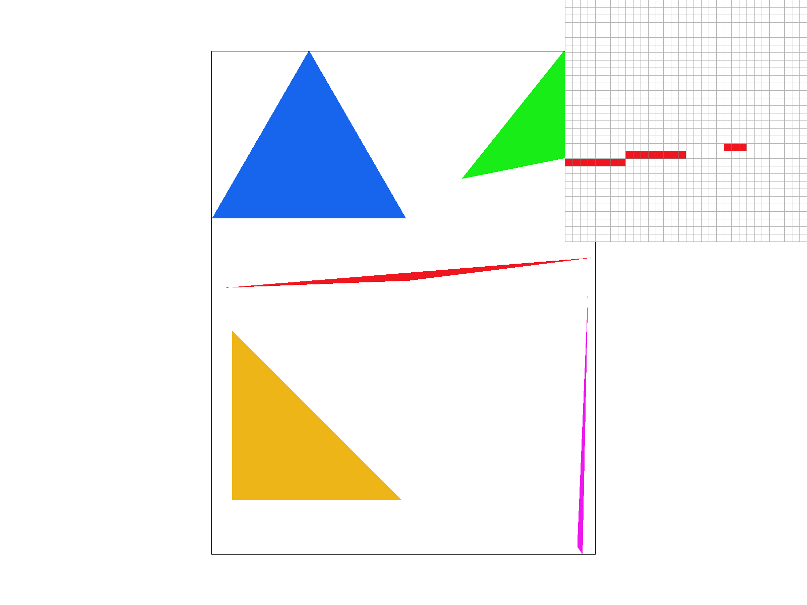
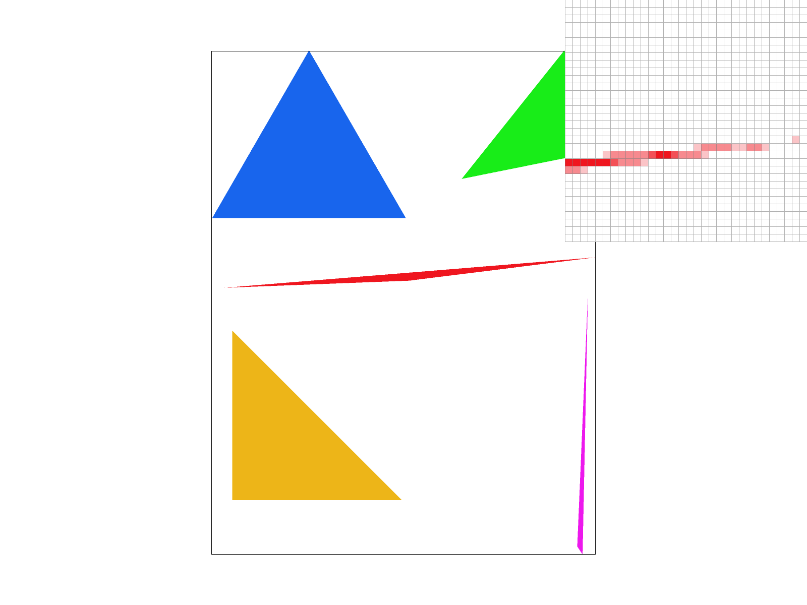
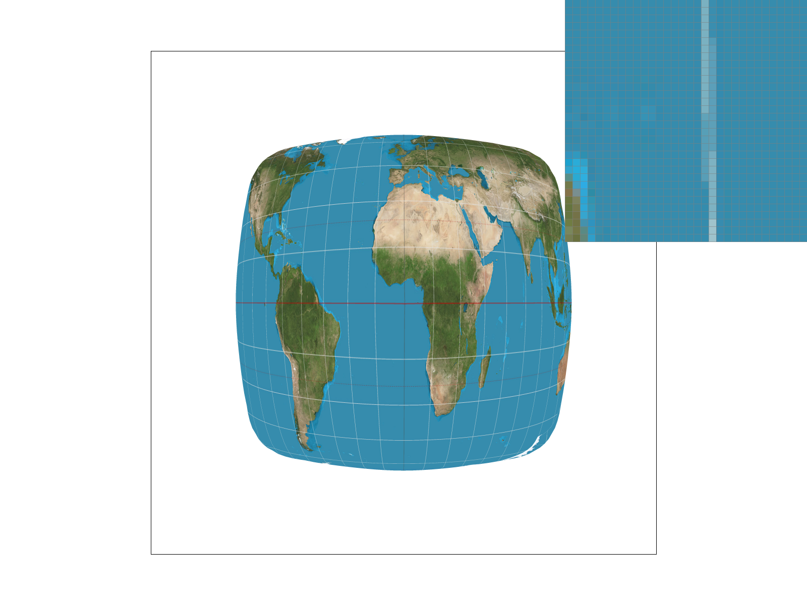
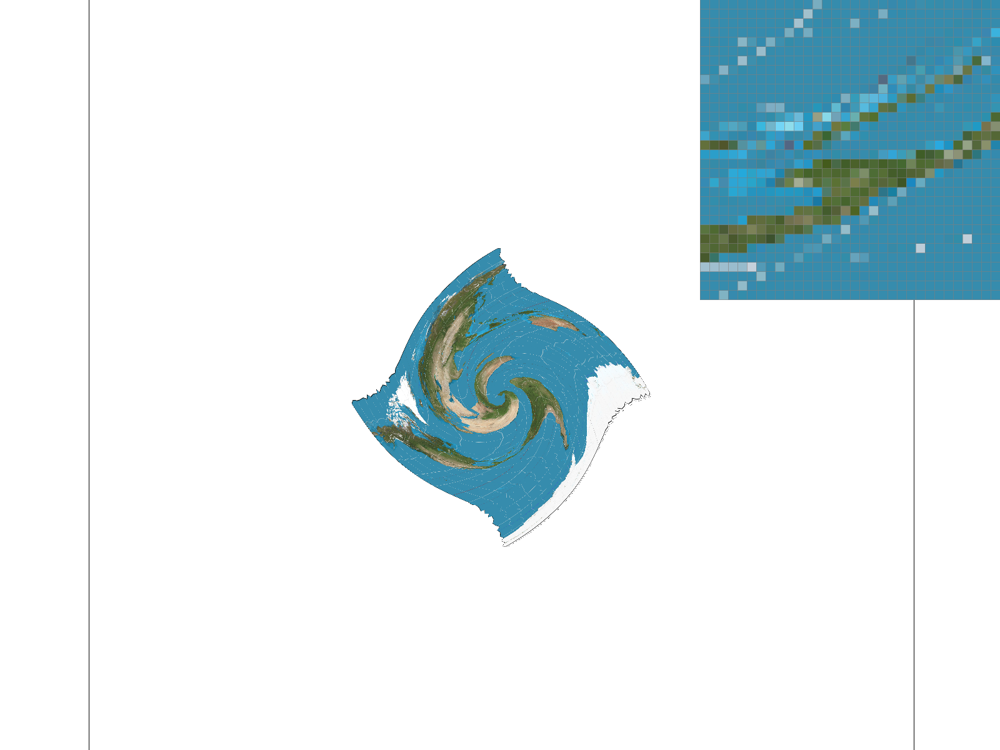

Overview
I implemented rasterization for triangles, supersampling to antialias, transforms to move objects in space, a method for interpolating colors and textures, as well as different granularities and methods at which to render texture. Overall, I built a method to render objects in 2D space and to map textures and colors onto them. From completing this homework, I learned more about how textures are antialiased based upon their "depth" in the world by using an approximation of how large their area in UV coordinates are, and how textures are generally mapped onto the screen.
Section I: Rasterization
Part 1: Rasterizing single-color triangles
Here is an example 2x2 gridlike structure using an HTML table. Each tr is a row and each td is a column in that row. You might find this useful for framing and showing your result images in an organized fashion.
To rasterize triangles, I iterated over all of the potential x and y values that could exist inside the triangle bounds, and then check whether those points exist inside of the triangle. To do so, I use the 3 line test mentioned in lecture. Furthermore, I ensure CCW winding order to ensure my code works regardless of the order the vertices are given in.
My algorithm is the same as checking each sample within the bounding box of the triangle, I add no additional optimizations like starting from the bottom left corner.
Part 2: Antialiasing triangles
I implemented supersampling by increasing the amount of values per pixel, and increased the size of the sample_buffer by the corresponding sampling rate. Thus, for each pixel I am measuring at multiple different areas inside the pixel, and then taking the average. I use only the sample_buffer in order to ensure that I can collect all of the values, and then average them down before adding them to the pixel buffer. Supersampling allows for less jaggies and generally antialiasing as it effectively is filtering out high frequencies. I changed my rasterization pipeline by sampling the triangle into the sample_buffer instead of the pixel buffer, and when drawing pixels for lines or dots, I duplicate the same color value to fill out the entire sampled space for the given pixel. I use supersampling to antialias as multiple samples around the edges of triangles reduces the appearance of jaggies.
|

Sample rate: 1
|

Sample rate: 4
|
Sample rate: 16
|
The differences between 1, 4, and 16 are due to supersampling. The true triangle corner that is skinny does not perfectly get captured by the pixels and it can be random if you end up sampling a white space or a space inside the triangle (hence why jaggies can occur with low resolution or no supersampling). As you increase the sampling rate, you average over all of the samples within the pixel. Since these samples may better capture the actual triangle (3 inside, 1 outside), you can have a more "averaged" but accurate representation of the shape. This is a blur that gets rid of the appearance of jaggies.
Part 3: Transforms
I am trying to make cubeman salute, so I rotated his right arm downwards to his side and rotated his other arm upwards towards his head, also rotating his forearm ccw towards his head to give him the appearance of saluting.
Section II: Sampling
Part 4: Barycentric coordinates
Barycentric coordinates is the idea that you can interpolate values between the vertices of triangles by using a weighted sum of the distances away from the vertices. In the above picture, the values in the middle of the triangle are determined by their relative distances to each of the vertices, leading to many different colors within the triangle. The closer it is to one vertex, the more you can see that the influence of that vertice on the overall color.
Part 5: "Pixel sampling" for texture mapping
Pixel sampling is the idea that you want to map from your pixels in screen space to the actual textures (which are saved beforehand) in texture space. I implemented texture mapping by using barycentric coordinates and then calculating the corresponding uv vector and seeing where that lies in texture space. Then, I used either nearest or bilinear to find the texel. There are a couple different ways of doing this, the first is nearest where you find the closest corresponding texel in texture space to the point you're sampling (this is done using barycentric coordinates where you know the texture coordinates of the vertices so thus you can infer the texture coordinate of the point inside the triangle). On the other hand, bilinear uses more neighbors (4), and takes the linear interpolation between either both vertical or both horizontal and then the other direction.
|
Nearest sampling Sample rate: 1
|

Nearest sampling Sample rate: 16
|
Bilinear sampling Sample rate: 1
|
Bilinear sampling Sample rate: 16
|
As you can see, the lines show up poorly in nearest but much better in bilinear sampling. The differences are more apparent when there are fine details or curvature that make it so that pixels apart is very far away on the texture space, s.t. you might miss certain textures if you only see the nearest texel. The lines fail to render as well with nearest sampling in this case, and there is aliasing.
Part 6: "Level sampling" with mipmaps for texture mapping
Level sampling is the idea that you want to only give the highest quality texture for textures that map well onto screen space, if the area is more stretched out i.e. a small area in pixel space maps to a large area in texture space, then you don't want to keep all high frequencies or else you will have aliasing and unecessary computational cost. I use mipmaps and calculate a level based upon this area (which is actually an estimate) in order to figure out which level to go to. The higher the level, the more downsampled the overall texture is. I implement a couple different ways of level sampling, including linear wherein I take the weighted average calculating the color of the pixel using both the rounded down level and the level above it.
The higher the number of samples per pixel, the better the antialiasing, but it is much slower and takes up a lot of memory. On the other hand, pixel sampling is not much faster using nearest or bilinear sampling, but bilinear sampling clearly beats nearest in many cases. Finally, using linear mipmap levels gives the best performance and best antialiasing, although it takes longer due to having to grab the texels in two different mipmaps.
|
L_ZERO P_NEAREST
|

L_ZERO P_LINEAR
|
L_NEAREST P_NEAREST
|
L_NEAREST P_LINEAR
|
Section III: Art Competition
If you are not participating in the optional art competition, don't worry about this section!
Part 7: Draw something interesting!